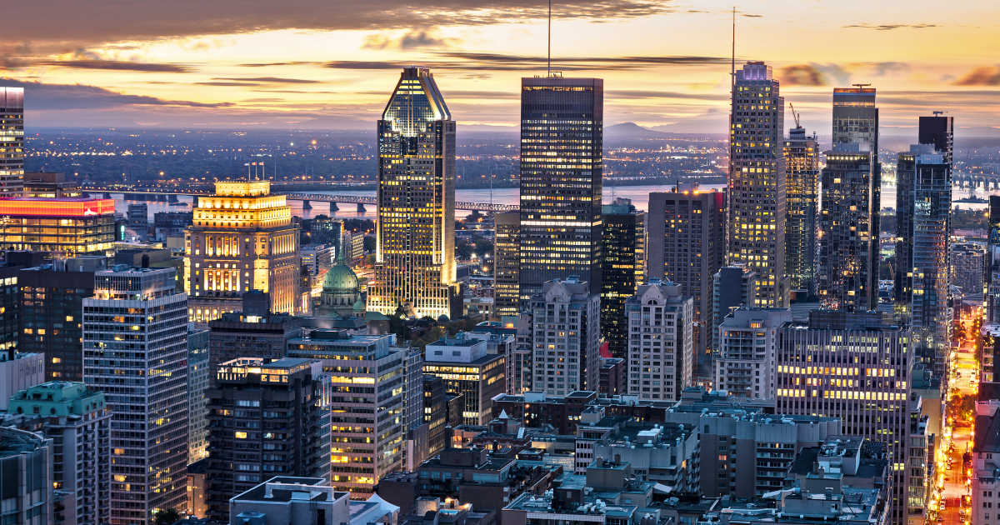
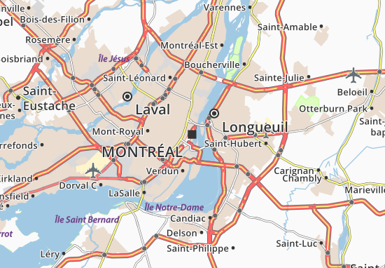

Bienvenue à Montréal!


Musicienne Honorée: Coeur de Pirate
- Sa nom de scène est Coeur de Priate, mais sa nom
de naissance est Béatrice Martin
- Elle est née dans Québec, mais elle habitait dans Montréal pour la majorité de sa vie
- Elle a crée sa musique dans l'anglais au début, mais elle a arrêté pour créer sa musique en français
Restaurants Célèbres:
- Île Flottante (4.8 sur 5)
- Bistro L'Entrepoint (4.8 sur 5)
- Le Filet (4.7 sur 5)
- Toqué! (4.7 sur 5)
Activités:
- Visiter la Grand Roue de Montréal
- Visiter la ville de Québec et les Cascades de Montmercy
- Visiter la Vieille Montréal et la Basilique de Notre-Dame
Information:
- Benjamin Franklin a visité Montréal dans le Révolution Americain
- Il faut que tous les batîments dans Montréal être plus court
que la Croix du Mont-Royal
- Le jeu vidéo "Assassin's Creed" est créé dans Montréal par Ubisoft
Clique ici pour rentrer à la page d'accueil